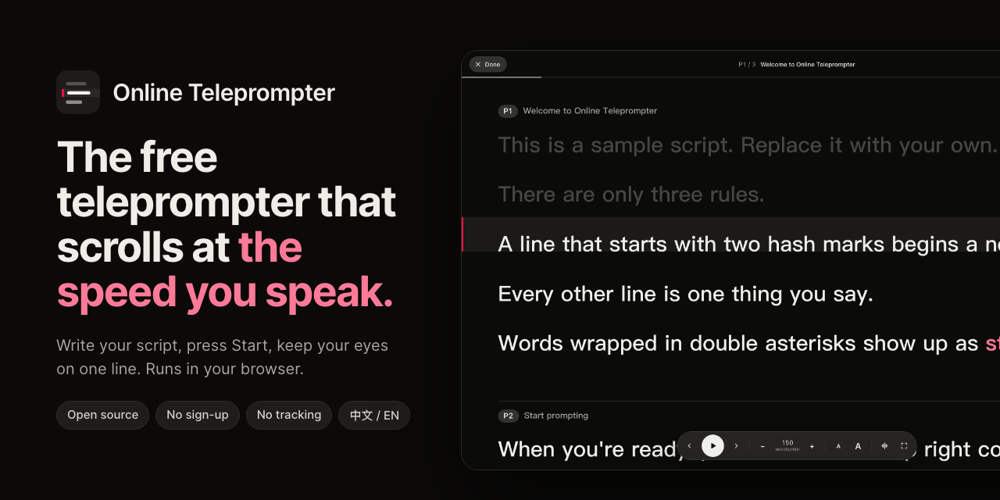

A free online teleprompter that scrolls at your speaking pace
Paste your script, press Start, and read from one line. Online Teleprompter paces your script in words per minute, so the speed you rehearse is the speed you speak. It is free, open source, and runs entirely in your browser.
Open the teleprompterView the source

Key facts
- Free to use, no sign-up, open source under Apache 2.0.
- Paces by speech, not pixels: words per minute for English, characters per minute for Chinese, Japanese and Korean.
- Default pace: 150 words per minute, or 280 Chinese characters per minute. Adjust in steps of 10.
- Type the length of your talk and the pace is worked out for you.
- Mirror mode for beam-splitter teleprompter glass, full screen, and phone support.
- Your script never leaves your browser: no server, no account, no analytics.
Why pace by words per minute?
Most online teleprompters scroll at a fixed number of pixels per second. That speed means something different every time you change the font size, and a long sentence that wraps onto three lines rushes past while a short one lingers. Rehearse at one size and present at another, and the pace no longer matches how you talk.
Online Teleprompter measures each line by how much there is to say in it. Every line stays on the reading line for as long as it takes to say it at your chosen pace, at any text size and any screen width. If you set 150 words per minute, a 15-word sentence holds the reading line for about six seconds.
How to use it
- Write or paste your script. Start each page or slide with
## Title, put one sentence per line, and wrap words you want to stress in**double asterisks**. - Set the pace. Type how many minutes the talk should run, or set words per minute directly. The page outline shows when each page starts.
- Press Start. Keep your eyes on the reading line. Press Space to play or pause.
Script format
# Product launch ← optional: the script's name
## Opening ← starts a new page
Good morning, everyone. ← one line is one thing you say
Today I want to show you **one simple idea**. ← stressed wordsPage titles are cues for you and are not counted as speech. You can import and export the script as a Markdown file, or drop a .md file onto the page.
Keyboard shortcuts
| Keys | What it does |
|---|---|
| Space | Play or pause |
| ← → | Previous or next page |
| ↑ ↓ | Pace up or down by 10 |
| + − | Larger or smaller text |
| M | Mirror the text for teleprompter glass |
| F | Full screen |
| Esc | Back to the editor |
| ⌘/Ctrl + Enter | Start from the page your cursor is on |
Who it's for
Founders rehearsing a pitch, speakers giving a talk or webinar, people recording YouTube or course videos, and anyone reading a statement to camera on Zoom. On a laptop, put the reading line close to your webcam so your eyes stay near the lens.
Questions
Is it free?
Yes. There is no sign-up and no paid tier, and the source code is open under the Apache 2.0 license.
Is my script uploaded anywhere?
No. It is saved only in your browser's local storage. The app has no server, no account and no analytics, and it makes no third-party requests.
What speed should I set?
Presentations are commonly delivered at about 130 to 160 words per minute, and the default is 150. For Chinese the default is 280 characters per minute. Or type the talk's length and let the pace follow.
Does it work with teleprompter glass?
Yes. Mirror mode flips the text for beam-splitter glass. Press M on the stage.
Can I use it on a phone or iPad?
Yes. It works in mobile browsers, and the screen stays awake while the script plays where the browser allows it.
Does it work offline?
Once the page has loaded it needs no network. Installing it for fully offline use is on the roadmap.
Can I host my own copy?
Yes. It is a static site with no build step and no dependencies. Deploy it to Vercel with one click from the GitHub README, or publish the public/ folder on any static host.